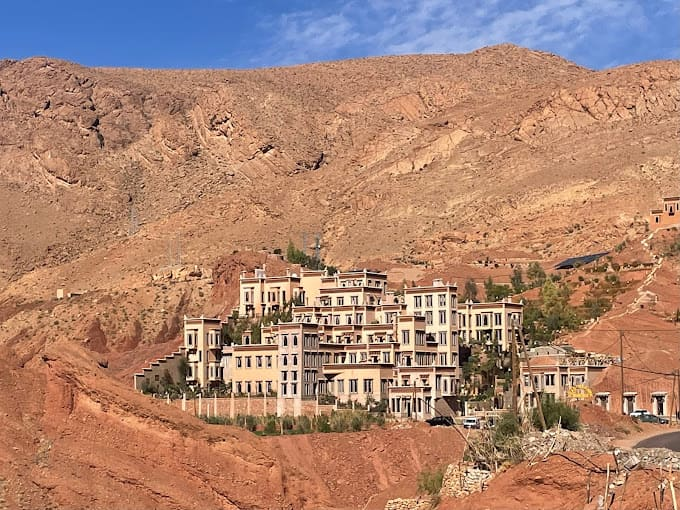

The short answer: A trustworthy Morocco tour company is a registered business that publishes clear prices and inclusions, names its accommodations and vehicles, has consistent independent reviews, answers your questions personally and specifically, and gives you written terms before taking a deposit. Booking directly with a reputable local agency usually gets you more flexibility and local knowledge for your budget than going through a large international reseller.
Search for a Morocco tour and you'll find hundreds of companies with similar photos of camels and dunes. Some are excellent local operators, some are international brands that subcontract to local operators, and some are a single person with a website and a borrowed car. For travelers booking from the United States, Canada or Australia, sometimes thousands of miles away, it can be hard to tell them apart. This guide gives you a practical way to do it.
Local Agency vs. International Operator
Both can deliver a good trip. The difference is mostly in who actually runs it, how flexible it is, and where your money goes.
| Local Moroccan agency | International operator | |
|---|---|---|
| Who runs the trip on the ground | Its own team and drivers | Often a local partner it subcontracts |
| Flexibility | High: itineraries built from scratch | Usually set departures or fixed packages |
| Local knowledge | Direct, from people who live there | Passed through an intermediary |
| Price | No reseller margin | Includes the brand's margin |
| Booking protection | Check terms and payment method carefully | May include home-country protections |
If you choose a local agency, the questions below matter even more, because you're relying on the company itself.
12 Questions to Ask Before You Book
- Are you a registered Moroccan business? A legitimate company can give you its registration details. In Morocco, every company has an ICE (Common Enterprise Identifier) number.
- Is the tour completely private? Confirm that the vehicle and driver are for your party only, for the whole trip.
- Who will be our driver, and will the same person stay with us throughout?
- What vehicle will we have? Make, size, air conditioning, and 4x4 if you're going off-road.
- Where exactly will we stay? Ask for property names, or at least the category and location, especially for the desert camp.
- What's included, and what isn't? Accommodation, which meals, guides, entrance fees, camel trek, transfers, fuel and tolls.
- Are local guides included in Fes and Marrakech? Official guides are required for guiding in the medinas.
- Is the price per person or per vehicle, and how does it change with room sharing?
- What does the desert camp tent include? A private bathroom, a real bed, heating in winter?
- Can we change the itinerary? Before the trip, and during it?
- What happens if something goes wrong? Who do we call, and is there support throughout the trip?
- What are the deposit, payment and cancellation terms? Get them in writing.
A good company will answer all twelve quickly, specifically and without pressure.
Red Flags to Watch For
- A price far below everyone else's. Private tours have real costs: vehicle, fuel, driver, accommodation. A very low quote usually means a shared vehicle, a basic camp or hidden extras.
- Vague accommodation, such as "standard hotel" or "desert camp", with no further detail.
- No written itinerary or terms before payment.
- Pressure to pay the full amount immediately, or requests for unusual payment methods.
- Generic replies that ignore your specific questions.
- Mandatory shopping stops written into the itinerary, often a sign of commission-driven touring.
- Reviews that all sound the same, or that all appeared within a few weeks.
How to Read Reviews Properly
Independent platforms such as TripAdvisor and Google are useful, but read them carefully:
- Look for reviews that mention specific details: the driver's name, a place, a problem that was solved.
- Check how the company replies to criticism.
- Prefer recent reviews, because drivers, camps and standards change.
- Be wary of companies with hundreds of five-star reviews and no specifics.
A newer company with a few detailed, genuine reviews can be a better choice than a large one with many generic ones, especially if its answers to your questions are clear and personal.
How to Compare Quotes Fairly
Two quotes for "a 7-day private Sahara tour" can describe very different trips. To compare them fairly, put them side by side and check:
- the number of nights in the desert, and the type of camp;
- the category of riads and hotels;
- meals included (breakfast only, half board, or all dinners at the camp);
- guided visits in the cities;
- room occupancy assumed (single, double, triple, quadruple);
- airport transfers and any extra excursions.
Our guide to what a private Morocco tour costs shows real published prices and what they include, so you have a benchmark.
Deposits, Payment and Cancellation
A deposit to secure accommodation and the vehicle is normal. Before paying anything, make sure you have:
- a written itinerary and a clear list of inclusions and exclusions;
- the deposit amount and when the balance is due;
- the cancellation terms, and what happens if your plans change;
- a secure payment method you're comfortable with.
Also buy travel insurance that covers cancellation and medical care, whichever company you choose.
How We Answer These Questions
We think you should hold us to the same standard, so here is how Morocco Boutique Tours answers them:
- Registered business: we are a Moroccan company registered under ICE No. 002790820000079.
- Always private: every journey has its own driver-guide and air-conditioned vehicle, for your party only.
- Local team: our founder and our driver-guides are Moroccan and based here. You can meet them on our Our Story page.
- Clear prices: every Signature Journey lists its price per person by room type, with full inclusions and exclusions.
- Flexible: any journey can be adjusted, or we can build a tailor-made trip from scratch.
- Independent reviews: you can read what guests say on TripAdvisor.
- Terms up front: our booking and cancellation terms are set out on our FAQs page.

Ask Us Anything
The best test of any company is how it answers your questions. Send us yours, as many as you like, and our team will reply personally within 24 hours.